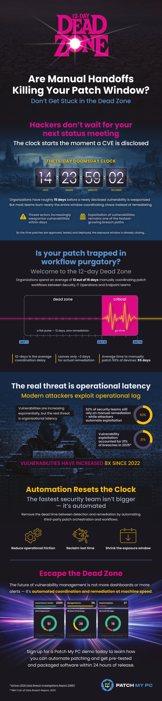

Every security update starts a race. On one side is the attacker. Modern exploit development is moving faster than ever, and AI is compressing the time between a vulnerability becoming public and someone figuring out how to weaponize it.
On the other side is your IT team. Before a patch reaches production, it has to be packaged, tested against business-critical applications, validated, approved, scheduled, and deployed through whatever operational processes your organization requires. None of those steps are optional, and most of them exist for good reasons.
The problem is that those timelines are moving in opposite directions. Attackers are accelerating. Enterprise deployment isn’t. That gap between a patch becoming available and the moment it’s actually protecting your environment is the dead zone.
Organizations haven’t become slower.
According to Verizon’s 2026 Data Breach Investigations Report, remediation times have actually improved year over year, with a median of 43 days for critical Known Exploited Vulnerabilities. The challenge is that attackers have become faster while enterprise deployment remains constrained by operational reality.
That same report found that software vulnerability exploitation remains the leading initial access vector, responsible for 31% of breaches. But, most problematically, evidence suggests that attackers are increasingly using AI to accelerate vulnerability research and exploit development, further compressing the time organizations have to deploy updates.
Enterprise administrators don’t need to be reminded what happens after Patch Tuesday. Packaging, compatibility testing, change control, phased deployments, maintenance windows, rollback planning, and exception handling are simply part of the job. None of those processes exist by accident. They reduce operational risk and keep business-critical systems running.
The problem is that those workflows were designed around a very different threat model. As exploit development accelerates, the time required to move an update safely through an enterprise has become a larger part of the organization’s attack surface. Every approval cycle, every manual packaging task, every validation step, and every deployment dependency extends the period between a security fix becoming available and that fix reaching production.
Oh, and there’s another problem: Every new security update enters a pipeline that’s already full. Packaging teams aren’t sitting idle waiting for the next CVE. They’re validating last week’s releases, resolving deployment failures, processing application requests, and supporting ongoing maintenance windows. As a result, many organizations experience roughly a 12-day delay before meaningful deployment work even begins.
Attackers are rarely polite enough to wait until your queue clears. Once an app gets to the front of the queue, then the patching song and dance begins. Preparing a single application for enterprise deployment can easily consume three to four hours of hands-on work, even for experienced administrators. Multiply that across the steady stream of monthly, weekly, and even daily updates (yes, Chrome, we’re talking about you), urgent security releases and application requests, and those hours quickly become days.
When the average exploit window is now measured at roughly 15 days, organizations don’t have the luxury of spending most of that time on repetitive packaging and validation work. Every manual task consumes time that attackers are using to reverse-engineer patches.
As much as we all hate wasted engineering time, the impact of manual patching isn’t measured only in administrator hours. It’s measured in how long known vulnerabilities remain exposed after a fix already exists.
Most IT teams aren’t slow because they’re not working hard. I’d venture to say most teams are working hard, but late nights and energy drinks do not a security strategy make. Teams are slow because they’re balancing security against stability across dozens of dependencies, thousands of devices and hundreds of applications. It sounds silly to say out loud, but attackers don’t have to navigate those same operational constraints.
There’s no red tape in the wild.
Thus, time is risk.
No organization will ever eliminate deployment latency entirely. Enterprise environments will always require testing, staged rollouts, and operational safeguards. The goal isn’t to remove those controls. It’s to remove the manual work that surrounds them. That’s where automation changes the equation. When application packaging, testing, deployment logic, and catalog maintenance are automated, administrators spend less time preparing updates and more time getting them into production. Instead of burning days on repetitive work, teams can focus on validation, exceptions, and the decisions that actually require genuine human judgment.
That’s the philosophy behind Patch My PC. We don’t eliminate the operational discipline required to deploy software safely. We eliminate as much of the repetitive work as possible so organizations can close the gap between a security update being released and that update protecting their environment.
As the exploit clock continues to shrink, that gap matters more than ever. Every manual step you can remove is time you can put back into deploying updates before attackers have the chance to capitalize on them. The exploit clock doesn’t care how many CAB meetings you had this week.
